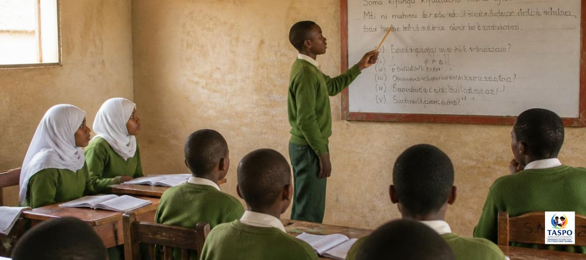
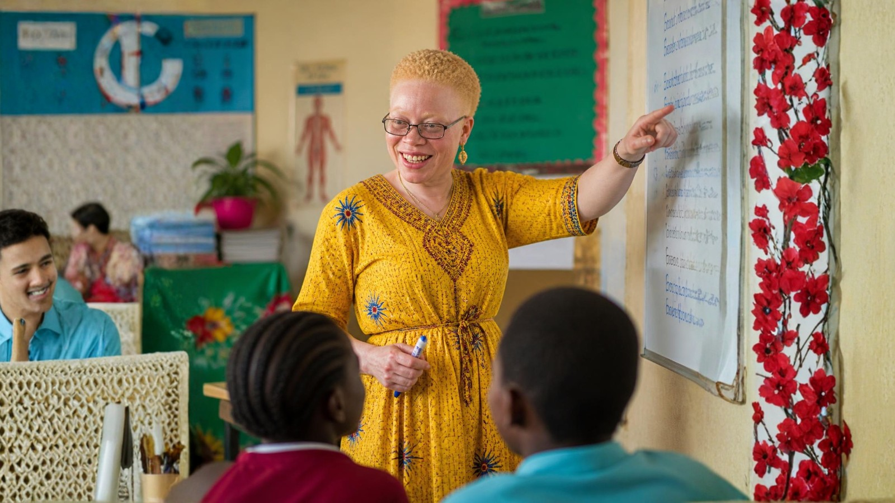

Why we're replacing chalk with whiteboards in Tanzanian classrooms
Chalk has been part of classroom life for generations. Here's why we think it's time for a cleaner, healthier alternative, and what the switch really involves.
Read article →Walk into most rural classrooms in Tanzania and you'll find the same set-up that's been there for generations: a blackboard, a box of chalk, and rows of children breathing in a fine white haze every lesson. Whiteboards for All is changing that, one classroom at a time.

Every time a teacher writes on a blackboard, and every time the board is wiped clean, chalk releases a cloud of fine dust into the air. In a small, poorly ventilated classroom with forty or fifty children packed in for six hours a day, that dust doesn't just disappear. It settles on desks, books and skin, and it gets breathed in, lesson after lesson, year after year.
Research into chalk dust has found that:
None of this is dramatic on any single day. That's exactly the problem: it's a slow, invisible harm that builds up over years of schooling, in classrooms where nobody thought to question it because it's simply how school has always been.
The fix isn't expensive research or new technology. It's a whiteboard. Classrooms using whiteboards and dry-erase markers show none of the dust spikes that chalk and blackboards produce. Same lesson, same teacher, same children, just cleaner air.
Whiteboards need a steady supply of markers and erasers, and markers run dry. That's why the project doesn't stop at the board itself: we plan for supplies so classrooms stay equipped long after the boards go up.
We believe education should build children up, not quietly wear down their health while it does. A blackboard was never a deliberate choice to put children at risk; it's simply what was available. Now something better is available too, and we think every classroom deserves it.
Every whiteboard we install replaces years of daily dust exposure with a wipe-clean surface and a dry marker. A small change on paper; in a classroom full of children, it's the air they'll breathe for the rest of their school life.
Much of the equipment is sourced through our partners around the world. We handle the practical side so that every board arrives safely and gets used. Read about the journey →
Donors, companies and organisations around the world support us with funding or with equipment we actually need.
We source equipment worldwide, pack it carefully and organise shipping to Tanzania.
We handle the paperwork and customs clearance, then deliver directly to the schools we work with.
Equipment goes into daily use, and we follow up with schools to make sure it's making a difference.
Give once, give monthly, or donate equipment through your company, school or community. Every contribution helps a classroom move from chalk dust to clear lessons.

Chalk has been part of classroom life for generations. Here's why we think it's time for a cleaner, healthier alternative, and what the switch really involves.
Read article →
How chalk dust affects the health of students and teachers in classrooms without whiteboards, and why switching away from chalk matters.
Read article →
Why teachers with albinism are hit hardest by chalk and blackboards, and how swapping to whiteboards removes one of their biggest daily obstacles.
Read article →Whether you give, partner, donate equipment or simply share our story, you help Tanzanian students learn in better conditions.